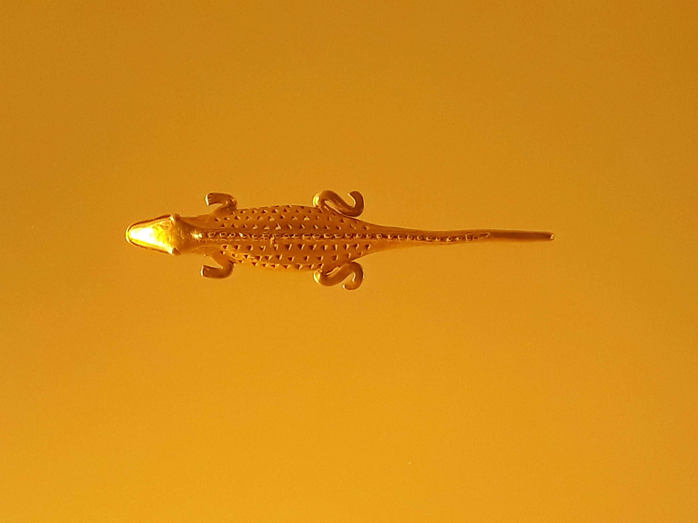

“La ciencia moderna difiere de todas las tradiciones previas de conocimiento en tres puntos fundamentales: a. La disposición a admitir ignorancia b. la centralidad de la observación y de las matemáticas c. La adquisición de nuevos poderes.” Yuval Noah Harari in Sapiens breve historia de la humanidad.
Nota: el sitio está en construcción!!
R es un lenguaje de programación que ha democratizado las herramientas estadísticas. R nos permite hacer análisis multivariantes, redes neuronales, inferencias Bayesianas o inteligencia artificial. La velocidad a la que las aplicaciones se producen desborda nuestra capacidad de reacción. Cada vez existen más formas de visualizar y analizar, ofreciéndonos continuamente múltiples perspectivas a datos que crecen en volumen y complejidad. Existe, pues, un gran interés en en el uso de estas nuevas herremientas analíticas para la adquisición de nuevos poderes. Sin embargo, a pesar de la obteción rápida de resultados, muchas veces estos son malinterpretados. Esto tal vez se deba a que rara vez nos adentramos en las razones del por qué y el cómo se definen ciertos conceptos estadísticos, prefiriendo saltar rápidamente a sus aplicaciones. Es así cómo, a pesar de ayudarnos a incrementar nuestra capacidad de análisis, youtubers con 1 millón de visualizaciones explican un P-valor como la probabilidad de que la hipótesis nula sea verdad, o que hay un 0.95 de probabilidad de que la media de una distribución se encuentre en un intervalo de 95% de confianza. Mejorar el entendimiento estadístico no sólo nos permite usar las herramientas eficientemente para las que fueron pensadas, sino que nos ayuda a entender aquello que queremos saber: los fenómenos naturales o procesos de producción, para actuar adecuadamente sobre ellos y no dejar que un algoritmo lo haga por nosoros. Puesta al servicio del entendimiento estadístico, R es una potente herramienta pedagógica. En estos tuturiales, reflexiono sobre conceptos básicos en estadística, desde ejemplos concretos y apoyándome en R.

Soy estadístico/bioinformático del Instituto de Salud Global de Barcelona, en donde desarrollo métodos estadísticos para datos biomédicos. También soy profesor adjunto de estadística de la Universitat Politècnica de Catalunya. Fuí analísta de datos en el Instituto de psiquiatría de King’s college London y tengo un doctorado en física del Laboratorio Cavendish en la Universidad de Cambridge (Reino Unido).